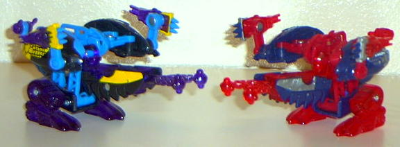
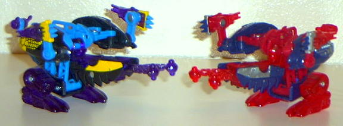

Beast mode is a mechanical
armadillo. This mode is very well-done, with nice mechanical and weapons
detailing everywhere. His feet have mini tank treads molded into the bottom.
There are also mini-harpoon launchers molded into the sides of his upper
shoulders, and his nose is molded like the nozzle of a gun! A pretty cool
detail, there, making this otherwise "cute" transformer look like it can
more than defend itself. Normally, "cute" would be a bad thing for a transformer,
but, considering that these are mini weapons platforms that transform into
animals, it's rather acceptable. The paint detailing on the back of Dillo's
"shell" is pretty neat, too, with all the uneven lines in it. The "eyes"
are pretty neat too, since they look a lot like a "No" symbol. Overall,
this is a very nice mode, but there are two problems I have with it. For
one, the spring that holds Dillo in this mold is slightly weaker than it
should be, and thus, Dillo's plastic pieces that hold his body down in
this mode are a bit more revealed than I would like, and thus make his
body look like a separate piece than his feet. Second, and this is relatively
minor, is that from an angle directly above, Dillo looks very oddly proportioned
in this mode, although he really isn't. Unfortunately, this is the angle
that he's packaged in, and it may deter people from buying this rather
great toy.
Dillo's weapon mode
is... interesting, to say the least. The box describes it as a "bolo launcher"-
and it is, but it's a bolo launcher with halves of a shell hanging off
of it, two claw-missle launchers on the side of it, a tail gun, and mechanical
feet. All in all, it looks like it was a rather hastily-put together mode,
even though he's brimming with weapons. The only weapon that can fire,
the bolo launcher, can fire its chain-ball pretty well. Several feet, in
fact, which indicates a nice, quality spring used there. One rather neat
feature about this mode is that, by moving Dillo's feet and/or body, you
can have Dillo aim at nearly every angle, which is something that the other
Deployers' weapon modes can't do.
The original Dillo's
color scheme, is, in my opinion, better than the more common repaint's.
The original Dillo has a nice, contrasting blue, black, purple, and yellow
color scheme, and it all fits together rather nicely. The repaint Dillo,
on the other hand, is mostly red, with some silver and some oddly contrasting
dark blue thrown in as well. His color scheme's not nearly as varied as
the original's because of this.
Overall, Dillo has a
GREAT beast mode, and a decent, if a bit odd-looking, weapon mode. Still,
Dillo is my favorite deployer, mainly because he's brimming with weapons
in both modes. Recommended.
Review by Beastbot